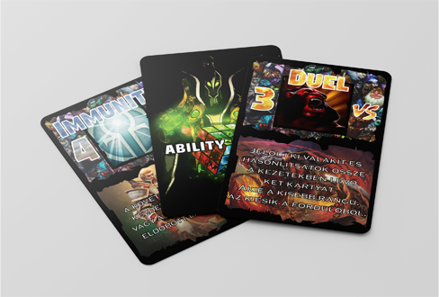

Munkáim
Ability letter
Love letter egy 4 fős társasjáték. Az Ability letter pedig lényegében ez a társas, csak saját egyedi dizájnt készítettem neki, majd nyomtattatam ki. 20 kártyalap 17 különböző előlappal. Az egész kártyajáték egy számítógépes játék (Dota 2) alapján készült. Az analógia két játék között könnyen felfedezhető ha ismered az alapjait.

Tabló
Az iskolai tablófotózás után vettem észre, hogy a nyakkendőm meggyűrődött. így utólag korrigáltam a hibát.